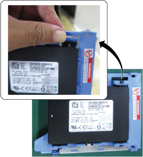

- 00000018WIA301CDF20GYZ
- id_131064991.8
- Jul 5, 2019 10:25:10 PM
Dell T5810 Lower Level FRU Replacement
Prerequisites
| Personnel requirements | |||
|---|---|---|---|
| Required persons | Preliminary requirements | Procedure | Finalization |
| 1 | - | - | 2 hours |
| Tools and test equipment | |||
|---|---|---|---|
| Item | Quantity | Part number | Manufacturer |
| Standard FE toolkit | 1 | - | - |
| ESD mat and wrist strap | 1 | - | - |
| Consumables | |||
|---|---|---|---|
| Item | Quantity | Part number | Manufacturer |
| GE Equipment Maintenance sticker | 1 | See FRU manual | - |
| Replacement parts | |||
|---|---|---|---|
| Item | Quantity | Part number | Manufacturer |
| DVD drive | 1 | See FRU manual | - |
| SSD | 2 | See FRU manual | - |
| Battery, Type 2032 Coin, 3 V, Lithium | 1 | See FRU manual | - |
| Required conditions |
|---|
| Access to both the front and rear of the operator console is required. Move the console away from walls and remove obstacles in the room. |
| No support for unbuffered memory. |
| DANGER | |
|---|---|
| Notice | |
|---|---|
| Notice | |
|---|---|
| Notice | |
|---|---|
About this task
- DVD drive
- Solid State Drive (SSD)
- CMOS battery
Preparing the workstation
Procedure
- Lift up the cover release latch and lift the cover upward to a 45-degree angle, and remove it from the host PC.
Figure 1. PC cover removal 
Replacing LLFRUs in Dell T5810 host PC
Replacing DVD drive
Procedure
- Disconnect the data and power cables from the DVD drive.
Figure 2. Power/cata cable on rear of DVD crive 
- Press on the clasp to release the latch holding the cables on the side of the cage.
Figure 4. Release latch 
- Lift the release latch on top of the cage, and slide the cage out from the compartment.
Figure 5. DVD drive cage removal 
- Remove the four screws that secure the DVD drive to the cage.
Figure 6. Location of screws 
- Remove the DVD drive from the cage.
Figure 7. DVD drive removal 
Replacing SSD
About this task
Procedure
- Disconnect the power supply and data cables from the SSD.
Figure 9. SSD cables removal 
- Press in gently on both sides of the bracket and slide the SSD carrier out of the slot.
Figure 10. SSD carrier removal 
- Press on the two tabs on one side of the SSD carrier to separate the pins from the SSD and remove the SSD from the carrier.
Figure 12. SSD and carrier  Note: You can twist the carrier to separate the pins more easily.Even though the pin is long and the tab is hard, it is possible to detach the pin from the SSD. The illustration below shows how to remove the pin.
Note: You can twist the carrier to separate the pins more easily.Even though the pin is long and the tab is hard, it is possible to detach the pin from the SSD. The illustration below shows how to remove the pin.Figure 13. Pin removal 
- Install the new SSD in reverse sequence.There are no jumpers required to configure the disk drives on the Dell T5810. Connect the power cables to the SATA connectors labeled on the board as HDD1 and HDD0.
Figure 14. Hard Drives with wiring harness connections 
1 HDD1 - DATA SSD Image data 2 HDD0 - Boot Drive SSD Application software
Replacing CMOS battery
Procedure
- Push the tab and lift the long black cover.
Figure 15. Remove long bracket 
- Find the CMOS battery on the Dell computer system board.
Figure 16. CMOS battery location 
Reinstalling host computer in GOC
Procedure
- Recover the left side cover of the host computer.
- Reinstall host computer to the GOC in reverse order of removal.
- Recover the GOC left side cover.
- Confirm that all cable connections to the GOC and host PC are tight.
- Get a GE Equipment Maintenance sticker, and write today’s date on the sticker. Put the sticker on the GOC where it is easily seen.
Finalization
Prerequisites
| FRU Item Replaced | Actions to be performed |
|---|---|
| DVD drive | Reboot and confirm that the DVD drive can read and write images. |
| Hard drive | Reload the software. |
| CMOS battery |
|